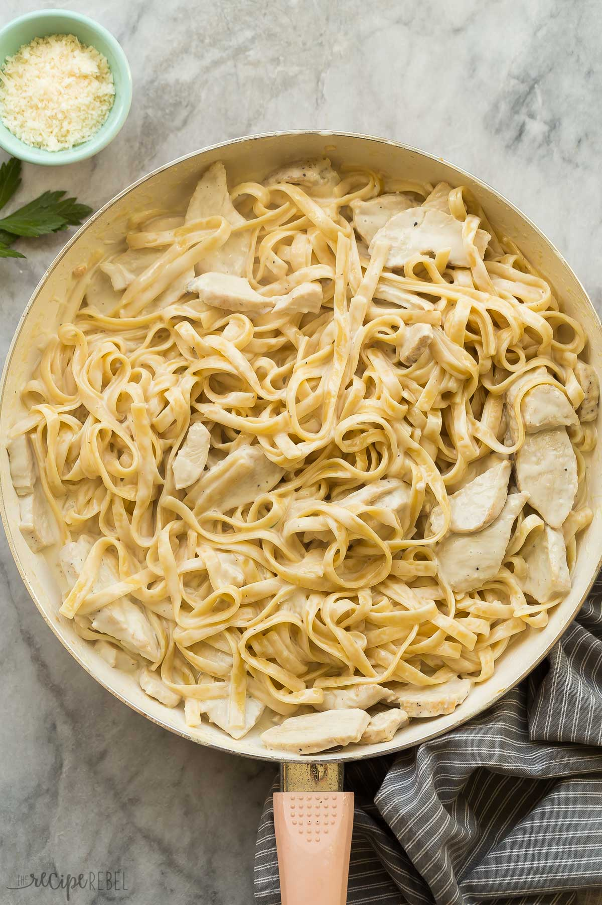

Chicken Alfredo Recipe

This Chicken Fettuccine Alfredo is made in ONE pot with just NINE ingredients and in 30 minutes!
Once you try this dish, you will quickly discover why it has become a household favorite!
Ingredients
- 2 tablespoons oil
- 2 boneless, skinless sliced chicken breasts
- 1 tablespoon minced garlic
- 1 teaspoon salt
- 4 cups chicken broth
- 1/4 teaspoon black pepper
- 13oz uncooked fettuccine
- 1 1/2 cup heavy cream
- 1/2 cup shredded parmesan cheese
Steps
- Chicken First: The chicken will take longer so we want to get it cooking right away! In a large skillet,
cook chicken roughly 2-3 minutes each side. Then, add garlic and cook for one minute.
- Add broth: Pour in broth and the salt/pepper. Keeping everything moist and flavorful.
- Add the fettucine: Make sure to add the noodles dry and stir often to avoid clumping together. Reduce heat and simmer unitl pasta is cooked.
- Once pasta is cooked: Add the cream and parmesan, then bring back to a simmer until cream thickens
- There you have it, your dish is ready to eat, Enjoy!